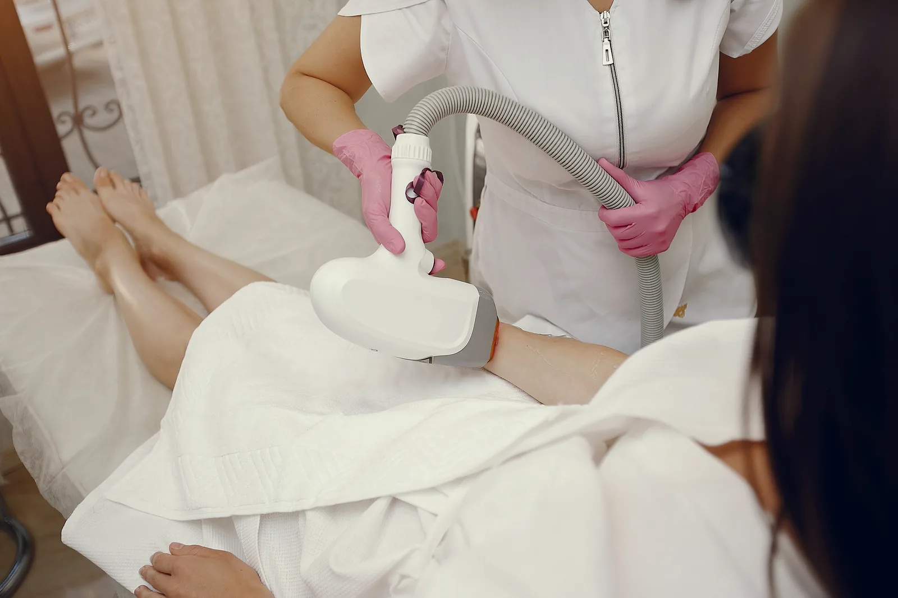

Visage
Lèvre supérieure, menton, joues, inter-sourcils, cou. Les zones où chaque poil compte — et où une expertise de précision fait toute la différence.
Chaque matin, le rasoir. Toutes les trois semaines, la cire. Et entre les deux, les poils incarnés, les rougeurs, les zones que vous évitez de montrer. Chez Elema'Beauté à Rives, Céline vous accompagne vers une peau lisse durablement — avec un laser adapté à votre peau, votre pilosité et votre confort. Toutes zones. Tous phototypes. Diagnostic offert.

Imaginez un mardi matin où vous n'avez pas pensé une seule seconde à vous épiler. Pas de rasoir sorti à la va-vite sous la douche. Pas de rougeurs à cacher. Pas de rendez-vous à la cire calé trois semaines à l'avance. C'est ça, l'épilation laser à Rives — pas une promesse abstraite, mais un changement concret dans votre quotidien.
Chez Elema'Beauté, notre laser de dernière génération traite toutes les zones du visage et du corps, sur tous les types de peau — y compris les peaux mates et foncées qui ne pouvaient pas être traitées avec les anciennes technologies. Que vous habitiez Rives, Voiron, Renage, Beaucroissant, Tullins ou Moirans : le premier rendez-vous diagnostic est offert, sans engagement.
Céline ne vend pas des séances. Elle établit un protocole précis pour votre peau et votre pilosité, vous donne une estimation réaliste du nombre de séances, et vous accompagne jusqu'au résultat. Transparence sur les coûts, adaptation à votre confort, suivi séance après séance.
Pas de promesse marketing. Des résultats que nos clientes de Rives et Voiron vivent au quotidien — séance après séance.
Après un protocole complet (6 à 10 séances selon la zone), la réduction est durable — souvent définitive sur la majorité de la surface traitée.
Notre laser traite tous les phototypes — des peaux les plus claires aux peaux mates et foncées. Un réglage personnalisé est effectué à chaque séance selon votre peau du moment.
Le laser détruit le follicule — il n'y a plus rien à repousser, rien à s'enflammer. Fini les boutons, les rougeurs et les zones douloureuses après épilation.
Notre appareil refroidit la peau en continu pendant le tir laser. La sensation — un picotement bref — est nettement moins intense qu'une épilation à la cire. Céline adapte l'intensité à votre seuil de confort.
Comptez le temps de rasage sur une vie, ou le nombre de rendez-vous cire annuels. Le laser amortit vite — en tranquillité d'esprit et en semaines libérées.
Contrairement à la cire ou à l'IPL à domicile, le laser a une fin. Une fois le protocole complété, c'est fait. Peut-être une séance d'entretien par an — et c'est tout.
Du visage aux orteils — chaque zone a ses particularités. Voici ce que nos clientes de Rives et du bassin voironnais traitent le plus souvent, et ce à quoi s'attendre.
Lèvre supérieure, menton, joues, inter-sourcils, cou. Les zones où chaque poil compte — et où une expertise de précision fait toute la différence.
La zone la plus rapide à traiter, et celle qui change le plus vite le quotidien. Plus de rasage au réveil, plus de déodorant qui irrite une peau fraîchement rasée.
Classique, échancré, brésilien ou intégral. La zone la plus demandée — et celle où les résultats (fin des poils incarnés, douceur retrouvée) sont les plus spectaculaires.
Demi-jambes ou jambes complètes. Une des transformations les plus visibles : plus de rasage avant la plage, plus de rendez-vous cire toutes les 3 semaines.
Demi-bras ou bras complets — particulièrement efficace sur les pilosités foncées ou abondantes. Résultats nets dès les 3 premières séances.
Très demandé par les hommes du bassin voironnais. Dos, épaules, torse, ventre — des zones qui répondent très bien au laser sur les pilosités denses.
Aucune mauvaise surprise. Voici exactement comment ça se passe chez Elema'Beauté, du premier appel jusqu'à votre sortie de l'institut.
Lors de votre premier rendez-vous, Céline évalue votre phototype, votre pilosité et votre historique. Vous repartez avec un protocole chiffré : nombre de séances estimées, tarif total, ordre de traitement des zones. Aucune surprise sur la facture.
La zone est nettoyée et un gel refroidissant est appliqué. Si vous avez bien rasé 24 à 48 h avant (obligatoire), la séance peut commencer immédiatement.
L'embout du laser glisse sur la peau en refroidissant en continu. Vous sentez de brefs picotements — comparables à un élastique qui claque, et nettement moins intenses qu'une cire. Durée : 5 min pour les aisselles, jusqu'à 45 min pour des jambes complètes.
Une crème calmante est appliquée immédiatement. Vous repartez en autonomie totale — pas de repos obligatoire. On planifie ensemble votre prochaine séance avant que vous partiez.
On ne va pas vous vendre le laser à tout prix. Voici les vraies différences, pour que vous choisissiez en connaissance de cause.
Le conseil de Céline : beaucoup de nos clientes combinent les deux. Laser sur les grandes zones récurrentes (jambes, maillot, aisselles) pour en finir une bonne fois — cire pour les zones secondaires ou les besoins du moment.
Le laser est sûr — à condition d'être pratiqué correctement. Voici les situations où on vous demandera d'attendre.
L'épilation laser est déconseillée en cas de grossesse ou d'allaitement, de prise récente d'isotrétinoïne (Roaccutane), d'exposition solaire récente ou de peau bronzée, de certaines pathologies cutanées actives, ou de médicaments photosensibilisants. Ce n'est pas une liste pour vous décourager — c'est une liste pour vous protéger. Lors du diagnostic offert à Rives, Céline vérifie avec vous chaque point avant le premier flash. Si la moindre contre-indication existe, on vous le dit clairement et on définit ensemble le bon moment pour commencer.
Des tarifs transparents et compétitifs en Isère. Forfaits multi-séances proposés lors du diagnostic personnalisé.
Tarifs indicatifs susceptibles d'évoluer. Le diagnostic initial est offert : nous vous remettons un devis détaillé personnalisé.
"J'avais essayé l'IPL à domicile pendant deux ans — résultat décevant. Chez Elema'Beauté, 8 séances sur les jambes et je ne pensais plus du tout à me raser. Résultat bluffant, suivi au top."
"Le maillot intégral — l'investissement le plus rentable de ma vie. En 7 séances : zéro poil incarné, zéro rasage, zéro gêne. Je ne comprends pas pourquoi j'ai attendu si longtemps."
"J'avais peur de la douleur — j'ai une peau très sensible. Céline a réglé l'intensité doucement dès la première séance. C'est vraiment supportable, et les résultats sur les aisselles sont là dès la 3e séance."
L'épilation laser permet une réduction durable du poil pouvant aller jusqu'à 90 %. On parle de résultats permanents après un protocole complet (6 à 10 séances selon la zone), avec parfois une à deux séances d'entretien par an pour maintenir le résultat.
Entre 6 et 10 séances espacées de 4 à 8 semaines selon la zone et la phase de croissance du poil. Le visage demande souvent plus de séances que le corps. Chez Elema'Beauté à Rives, nous établissons un protocole personnalisé lors du diagnostic initial.
La sensation est souvent décrite comme un picotement ou un coup d'élastique très bref. Nos appareils sont équipés d'un système de refroidissement qui rend la séance très supportable. Chaque peau ressent différemment : nous adaptons l'intensité à votre confort.
Oui. Les technologies récentes que nous utilisons à Rives permettent de traiter tous les phototypes, y compris les peaux mates à foncées. Un diagnostic préalable est indispensable pour adapter le réglage.
Nos tarifs vont de 20 € pour le bilan personnalisé à 240 € pour les jambes complètes. La lèvre ou le menton est à 30-35 €, les demi-jambes à 125 €. Pour les autres zones (aisselles, maillot, bras, dos…), le tarif est établi lors du bilan.
Oui, à condition d'éviter toute exposition solaire les 4 semaines avant et après chaque séance, et d'appliquer une protection SPF 50 quotidienne. Si la zone est exposée régulièrement au soleil, nous recommandons de privilégier l'automne et l'hiver pour démarrer.
Toutes les zones du visage et du corps : lèvre, menton, joues, aisselles, bras, dos, torse, ventre, maillot, fessier, jambes, doigts, orteils. Nous traitons aussi bien les femmes que les hommes.
Oui : raser la zone 24 à 48 h avant (jamais d'épilation à la cire ou à la pince dans le mois qui précède), éviter le soleil, ne pas appliquer de crème la veille. Nous vous remettons un guide complet lors du premier rendez-vous.
Non, le premier rendez-vous diagnostic est offert chez Elema'Beauté. C'est un moment d'échange essentiel pour comprendre vos attentes, évaluer votre peau et votre pilosité, et vous proposer un devis transparent.
Pas de vente forcée, pas de forfait imposé. Céline évalue votre peau, vous dit exactement ce que le laser peut faire pour vous, et vous remet un devis détaillé. Vous décidez ensuite, sans pression. Disponible à Rives du mardi au samedi — réservation en 2 minutes sur Planity.
Réserver mon diagnostic gratuit